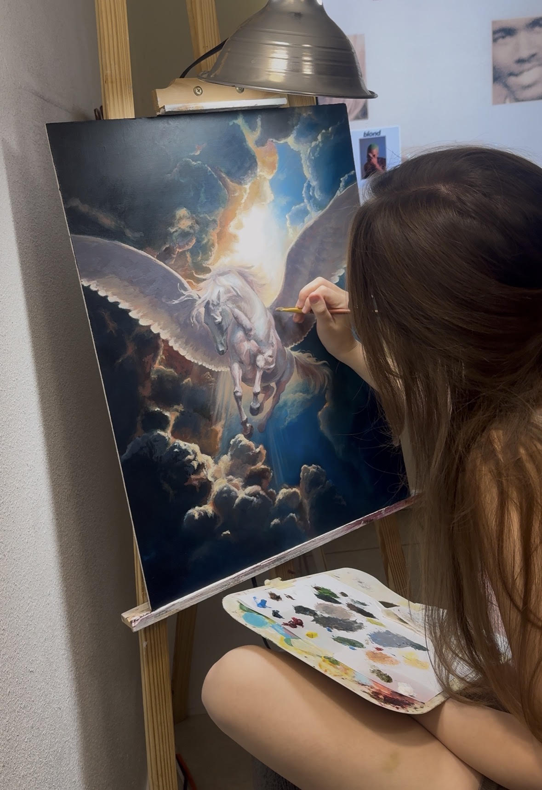
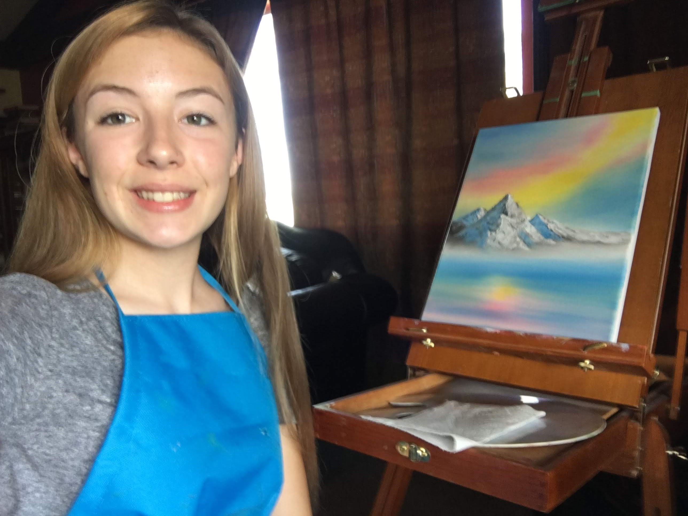
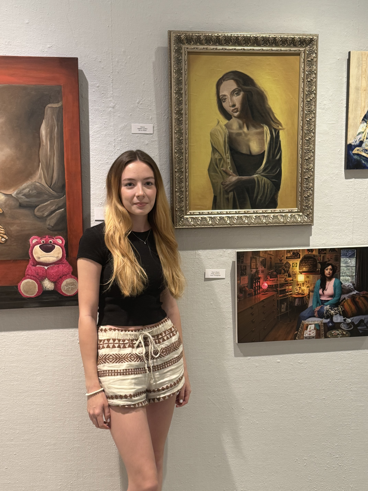
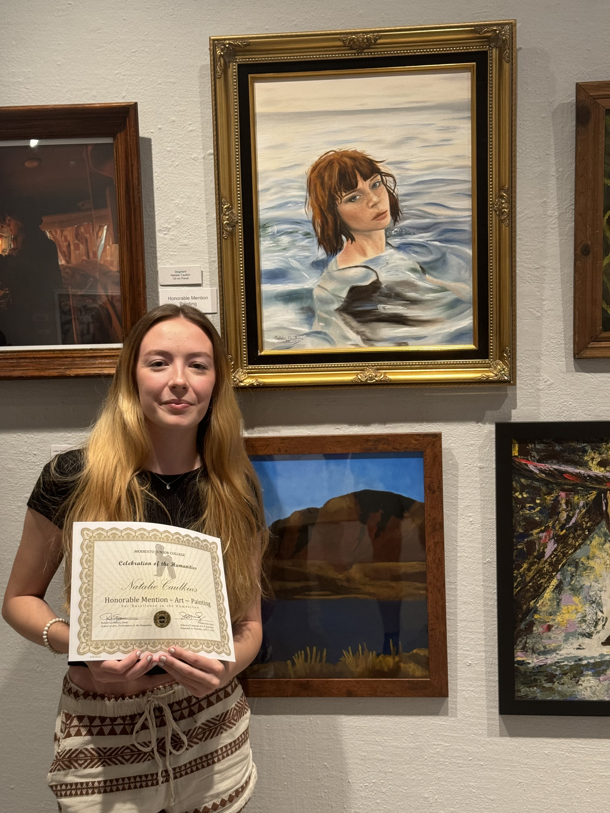
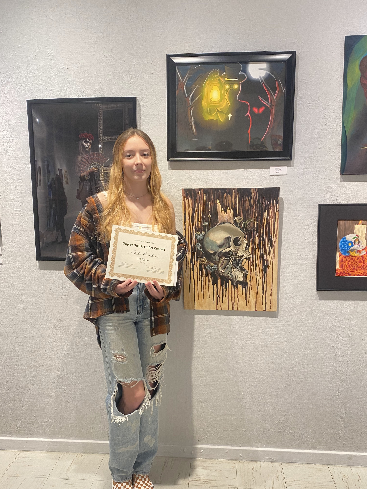
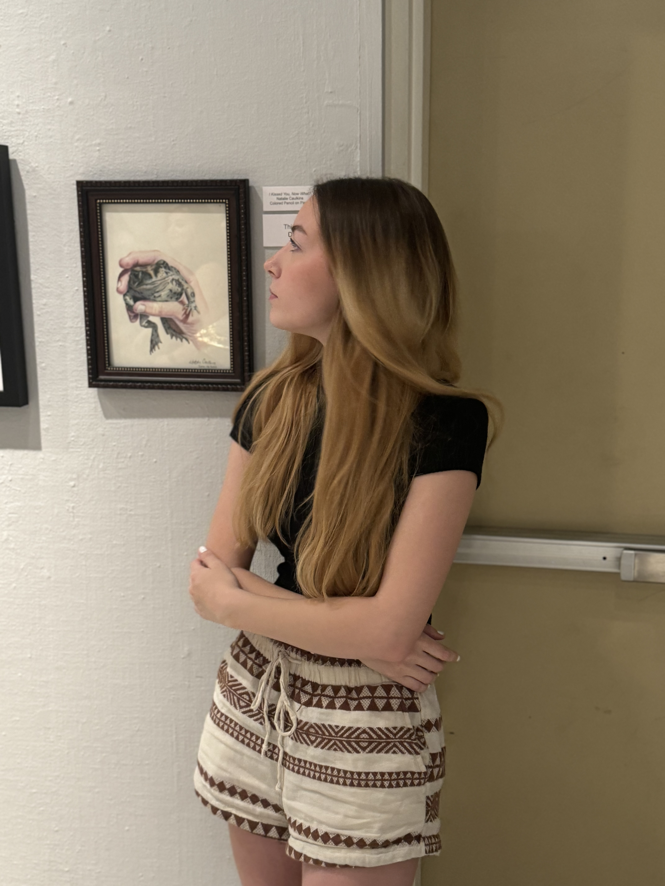
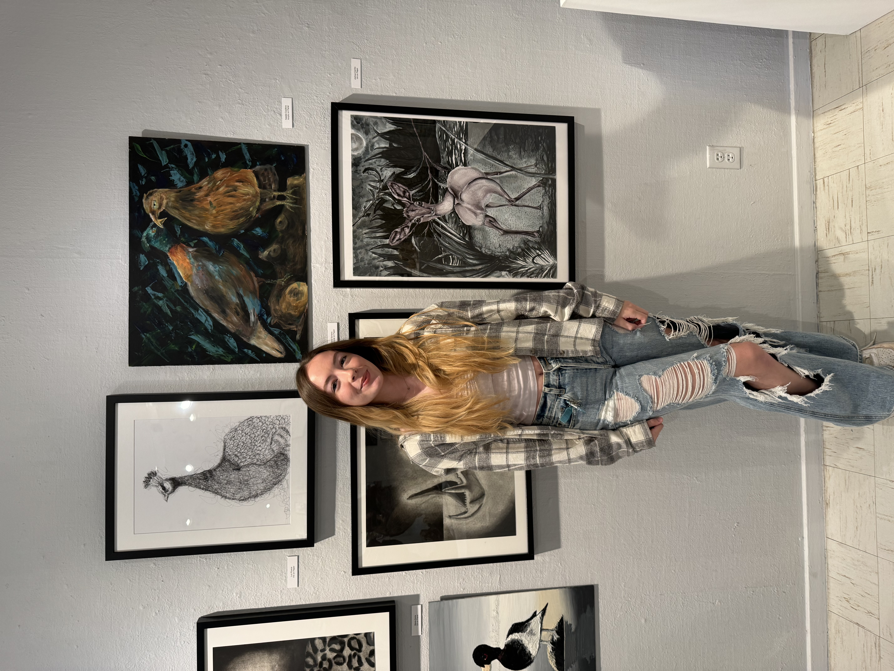

A moment during the final layers of "Ascension" 2026

A beginning — painting along with Bob Ross in 2019
Meet The Artist
I have been creating art for as long as I can remember. Drawing, illustration, and painting have been a constant presence throughout my life, gradually becoming not only a creative practice, but a way of experiencing and preserving the world around me.
I paint because it allows me to slow down and escape from the noise of life. When I become immersed in a painting, hours go by while my music plays. Slowly my thoughts quiet, and the world outside of the canvas seems to disappear. And somehow, everything I experience during those hours becomes part of the painting. A song, a movie, a particular season of my life, a feeling, a place, or an ordinary afternoon can become intertwined with the work. I think of my paintings as containers for memory. Years later, I can look at a painting and remember not only what I painted, but who I was when I painted it.
I am particularly fascinated by light and the way it transforms the world around us. I love observing the way light falls across a face, passes through water, changes with distance, or appears again through reflection. Light can completely alter the atmosphere of a scene, and I often use it as a way of creating emotion within my work.
My subjects vary widely. I am drawn to portraiture and the human figure, but equally fascinated by landscapes, nature, and imagined places. I often paint environments that feel like somewhere I could escape into—places that may be rooted in reality but carry something dreamlike or unfamiliar. My work can move between the feminine and whimsical, the romantic and beautiful, and the darker or more emotionally charged.
Beauty and imagination are recurring themes throughout my work. I am drawn to romanticism, nostalgia, and the feeling of remembering something that may no longer exist. I enjoy allowing a painting to exist somewhere between reality and fantasy, where atmosphere and emotion can be just as important as the subject itself.
My practice is centered primarily around oil and acrylic painting, though I enjoy exploring many different mediums and techniques. My fascination with oil painting began in 2018, when I discovered Bob Ross's painting tutorials. What began as an introduction to the medium quickly became a lasting passion. I later pursued Fine Art in college, taking as many art courses as I could and expanding my understanding of color, composition, technique, art history, and artistic expression. Alongside my painting practice, I have been writing and selling crochet patterns since 2023, continuing my interest in creating tangible objects from ideas and imagination.
Philosophy
In the Gallery




